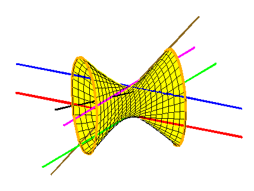

|  | Abstract The Galois group of a problem in enumerative geometry encodes the structure of the set of solutions. This invariant was introduced by Jordan in 1870, and shown by Harris in 1979 to be a monodromy group of the total space of the problem. That is, it is the group of permutations of solutions obtained by varying the conditions. For example, in the animation at left the two magenta lines are interchanged when the black line rotates, showing that the Galois group of the Schubert problem of 4 lines is the full symmetric group, S2. Numerical homotopy continuation, a method to compute numerical solutions to systems of equations, was developed for applications of mathematics. With Anton Leykin, we apply it to the problem from pure mathematics of computing Galois groups of Schubert problems, a class of geometric problems including the problem of four lines. In this talk, I will describe this work, also giving the necessary background. In particular, I will explain how we show by direct computation that the Galois group of the Schubert problem of 3-planes in 8-dimensional complex space meeting 15 fixed 5-planes non-trivially is the full symmetric group S6006. |
|
|
|
Anton Leykin and Frank Sottile, Galois groups of Schubert problems via homotopy computation, 18 pages. ArXiV:0710.4607. |